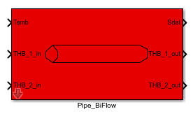
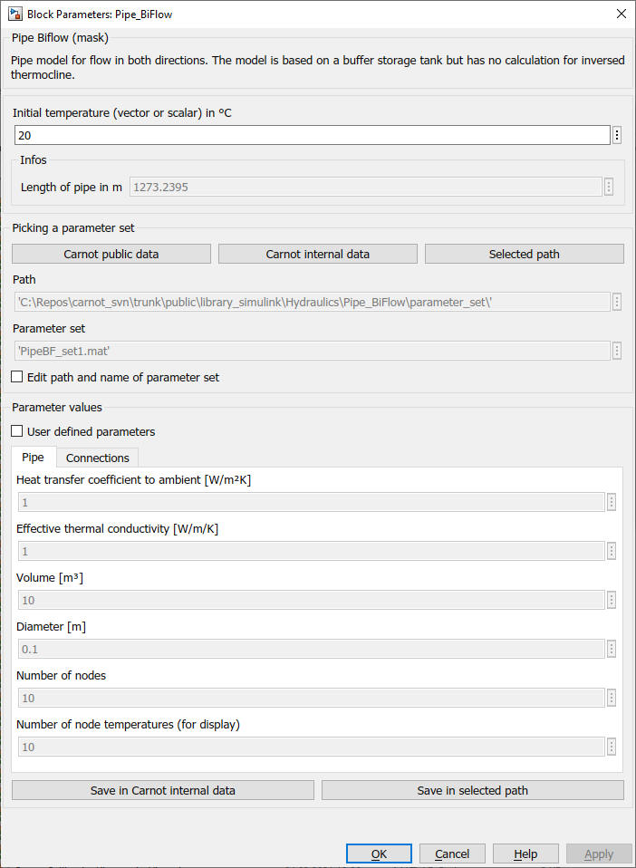

Pipe Biflow

Path: CARNOT/Hydraulics
Purpose
Pipe with flow in both
directions.
Description
Pipe model for flow in both directions. The model is based on a buffer storage
tank but has no calculation for inversed thermocline.
The model is based on
Storage_Type_N
Parameters and Dialog Box
The parameters
represent the
geometric and thermodynamic data of the storage.
The top mask
defines also the number of ports,
the number of temperature sensors and the
number of nodes.

The initial temperature can be a scalar value which means one temperature for
all nodes. It may also be a vector with the length “nodes”. In this case each
node is initialized with its individual temperature. The first element in the
vector is the temperature for the bottom node.
Geometric values, intial temperatures and the positions of the connections are
determined in the callback function CarnotCallbacks_PipeBilfow.m
Examplees: see
example_Pipe_Biflow.slx
Characteristics
Direct Feedthrough Yes
Sample
time
Inherited
from driving block
States corresponding to the number
of nodes
Vectorized
No
Solvers
variable and fixed timestep
Literature
Patankar: Numerical Heat Tansfer and Fluid Flow, 1980